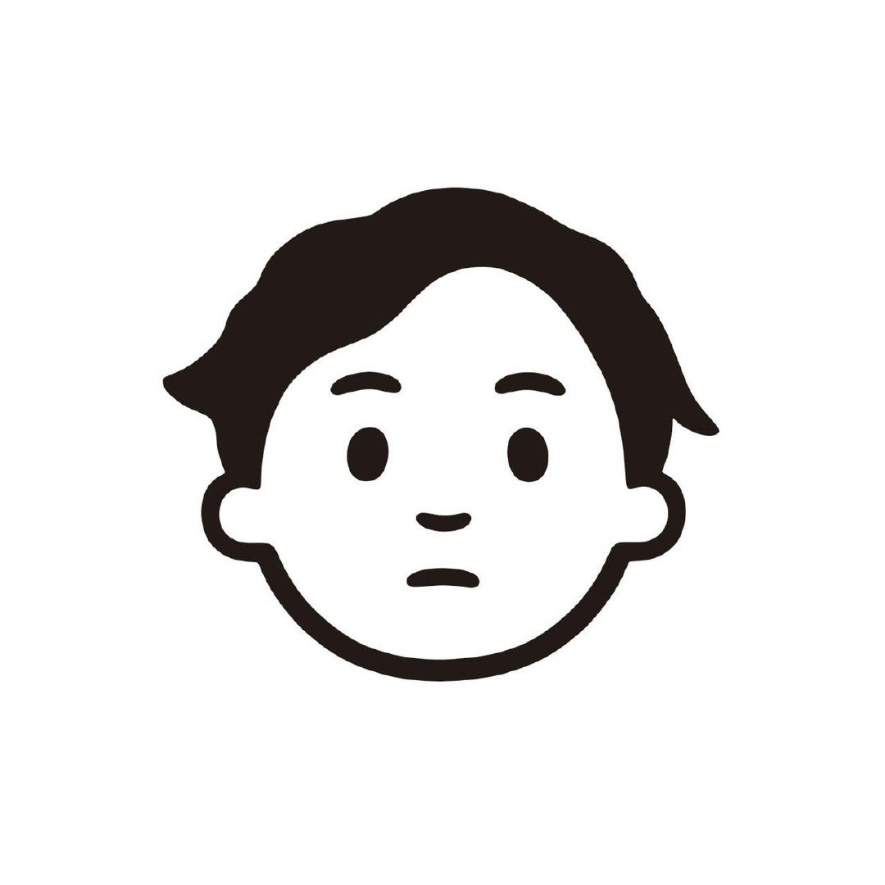

Lin Shi, Haowei Lin, Zixuan Zhu, ..., Mengze Tang, ..., Andy Konwinski, Boxuan Li, Leon Liangyu Chen, Alex Dimakis, Nicholas Carlini, ..., Mike A Merrill, Ludwig Schmidt, Alex Shaw

My name is Mengze Tang and I'm a second-year PhD student of computer sciences at the University of Wisconsin–Madison, working with Prof. Tianyu Li. My current research interests lie in the intersection of machine learning and data systems, spanning both algorithmic and systems perspectives. Drop me an email if you want to chat about anything!
cv · github · scholar · mengze [at] cs.wisc.edu
Lin Shi, Haowei Lin, Zixuan Zhu, ..., Mengze Tang, ..., Andy Konwinski, Boxuan Li, Leon Liangyu Chen, Alex Dimakis, Nicholas Carlini, ..., Mike A Merrill, Ludwig Schmidt, Alex Shaw
A benchmark of expert-level academic questions to assess AI capabilities
Center for AI Safety, Scale AI & HLE Contributors Consortium
Quake: Adaptive Indexing for Vector Search
Jason Mohoney, Devesh Sarda, Mengze Tang, Shihabur Rahman Chowdhury, Anil Pacaci, Ihab F. Ilyas, Theodoros Rekatsinas, Shivaram Venkataraman
I enjoy watching and playing football during my free time. Messi is the GOAT. I also like watching or playing many other sports, including basketball, snooker, and F1. You name it—except for the ones I do not think are sports.
I like listening to cantonese pop music, especially Eason Chan.
This page's layout is stolen from Prof. Aws Albarghouthi's page.
"I did it for me. I liked it. I was good at it. And, I was really... I was alive."
– Walter White
last edited